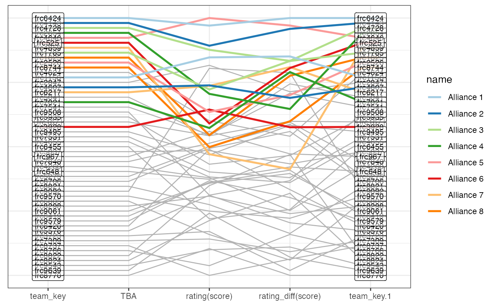

Show the parallel coordinate plot of an event based on the qualification matches and the TBA ranking.
Arguments
- event_code
character string of an event
- ...
set of variables that should be used in the comparison of teams
- color
character value, one of "Captain", "Pick 1", "Pick 2", "Pick 3". Colors all identified members of an Alliance up to the specified level. Use
NAfor no coloring.- verbose
logical value. Should the function provide messages during runtime? Defaults to TRUE.
Details
Note that this function is a wrapper of tba functionality and is therefore
quite opinionated. In case you want to make changes,
you would need to work with the basic tba functions.
Assumptions/Decisions:
comparisons are based on qualifying matches only.
Examples
# just get the plot
compare_teams("2024iacf", score)
#> Looking up event ...
#> Loading match details ...
#> Ranking teams ...
#> Adding contribution in score differences ...
#> Loading TBA rankings ...
#> Finding alliance information ...
#> Preparing plot ...
#> Alliance picks up to Pick 1 are shown in color.
#> Scale for x is already present.
#> Adding another scale for x, which will replace the existing scale.
